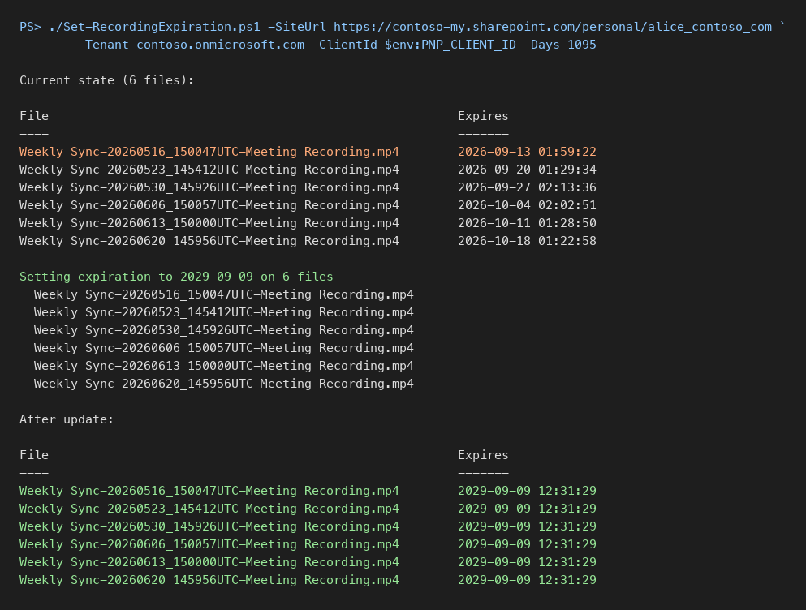

Set or extend the expiration date on existing Teams meeting recordings
Summary
Teams meeting recordings saved to OneDrive or SharePoint carry an expiration date stamped at creation time from the Teams meeting policy. Changing the policy only affects new recordings, and Microsoft's documentation says existing ones must be edited one at a time in the OneDrive details pane.
The date is stored in the hidden library column _ExpirationDate, which is read-only to every list item write: Set-PnPListItem, SystemUpdate() and ValidateUpdateListItem all fail with "The field you are trying to update may be read only." The working path is the CSOM method File.SetExpirationDate(DateTime) on the file object, which is what the OneDrive UI itself calls.
This script lists every recording in a folder with its current expiration date, then sets each one to a new date a given number of days from today. Run it with -ListOnly first to see what it will touch.

Notes:
- A OneDrive that holds more than 5000 items trips the list view threshold when queried with
Get-PnPListItem -FolderServerRelativeUrl. The script enumerates the folder withGet-PnPFolderItemand fetches each file withGet-PnPFile -AsListIteminstead. Connect-PnPOnlineinfers the tenant from a-my.sharepoint.comhost incorrectly, so-Tenantis passed explicitly.- Recordings that have already expired sit in the recycle bin for 93 days. Restore them first, then run this script, or the next sweep deletes them again.
<#
.SYNOPSIS
Lists and sets the expiration date on Teams meeting recordings in a OneDrive or SharePoint folder.
.EXAMPLE
./Set-RecordingExpiration.ps1 -SiteUrl https://contoso-my.sharepoint.com/personal/alice_contoso_com -Tenant contoso.onmicrosoft.com -ClientId <app id> -ListOnly
.EXAMPLE
./Set-RecordingExpiration.ps1 -SiteUrl https://contoso-my.sharepoint.com/personal/alice_contoso_com -Tenant contoso.onmicrosoft.com -ClientId <app id> -Days 1095
#>
param(
[Parameter(Mandatory)] [string]$SiteUrl,
[Parameter(Mandatory)] [string]$Tenant,
[Parameter(Mandatory)] [string]$ClientId,
[string]$FolderSiteRelativeUrl = "Documents/Recordings",
[string]$NameFilter = "*.mp4",
[int]$Days = 1095,
[switch]$ListOnly
)
Connect-PnPOnline -Url $SiteUrl -ClientId $ClientId -Tenant $Tenant -Interactive
function Get-Recordings {
Get-PnPFolderItem -FolderSiteRelativeUrl $FolderSiteRelativeUrl -ItemType File |
Where-Object { $_.Name -like $NameFilter } |
ForEach-Object { Get-PnPFile -Url $_.ServerRelativeUrl -AsListItem }
}
function Show-Recordings($items) {
$items | Select-Object @{ n = "File"; e = { $_["FileLeafRef"] } },
@{ n = "Expires"; e = { $_["_ExpirationDate"] } } |
Format-Table -AutoSize
}
$items = @(Get-Recordings)
Write-Host "Current state ($($items.Count) files):"
Show-Recordings $items
if ($ListOnly) { return }
$newDate = (Get-Date).AddDays($Days).ToUniversalTime()
Write-Host "Setting expiration to $($newDate.ToString('yyyy-MM-dd')) on $($items.Count) files"
foreach ($item in $items) {
$item.File.SetExpirationDate($newDate)
Invoke-PnPQuery
Write-Host " $($item['FileLeafRef'])"
}
Write-Host "After update:"
Show-Recordings @(Get-Recordings)
Check out the PnP PowerShell to learn more at: https://aka.ms/pnp/powershell
The way you login into PnP PowerShell has changed please read PnP Management Shell EntraID app is deleted : what should I do ?
Contributors
| Author(s) |
|---|
| George Brooks |
Disclaimer
THESE SAMPLES ARE PROVIDED AS IS WITHOUT WARRANTY OF ANY KIND, EITHER EXPRESS OR IMPLIED, INCLUDING ANY IMPLIED WARRANTIES OF FITNESS FOR A PARTICULAR PURPOSE, MERCHANTABILITY, OR NON-INFRINGEMENT.